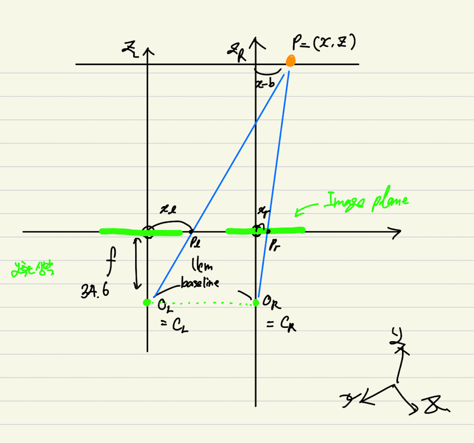

2차원 평면 에서 3차원 입체
Stereo Camera를 통해 2차원으로 찍힌 사진을 3차원으로 변환 하는 3D Reconstruction의 다시 한번 코드와 함께 정리한다.

이 전, 포스팅을 했던 3D Reconstruction과 굉장히 유사한 성격을 지닌 글이긴 하다만, 직접적으로 성공한 사례와 그리고 disparity, StereoSGBM에 대해 더더욱 자세히 다루기 위해 작성하기로 하였다. 기본적인 내용이나 언급들에 대해서는 이전 포스팅해서 충분히 했다고 판단 되기 때문에 넘어가도록 하겠다. 다만 원리에 대해서는 짚고 넘어가야 할 것 같다. 수학적인 내용과 물리적인 내용이 추가 되었다.

`O_L`와 `O_R`을 카메라라고 가정하고 글을 작성을 하겠다. 다시 한번 언급한다. 카메라에서 들어오는 모든 이미지 값들은 2차원으로 구성이 되어있다. 여기서 우리가 해야할 것은 Stereo로 찍은 이미지를 3차원의 형태로 변환해주는 것이다.
왼쪽 카메라를 중심으로 `(u_R, v_R)` 까지의 거리를 `f` 라고 한다. `focal length`의 앞자를 따 `f` 라고한다. `focal`의 대한 자세한 설명은 이거 보고 알면 된다. 귀찮다. 다시 이어서, 오른쪽 카메라도 원리는 동일하다만 왼쪽 카메라를 기준으로 잡았기 때문에 방향은 다르게 갈 것이다. 유의할 점은 `u_R`와 `u_L`의 `x`좌표 값은 같은 축에 놓여져 있기 때문에 값은 동일하다. 다만, `z` 값만 다른 것 뿐이다.
여기서 하나 더 중요시 해야 할 것이 하나 있는데, `x`와 `z`로 있다. `y`는 카메라의 높이와 같은 부분으로 굳이 초점거리나 처리를 위해서 활용되거나 하진 않는다. 그렇기에 큰 필요가 없으므로 그 부분에 대해서는 다루지 않는다. `P_L = (X, Y, Z)` 를 피사체로 두고 사진을 찍게 된다면 카메라에 들어온 피사체의 모습은 양쪽 카메라 모두 다르게 보일 것이다. 이 부분이 중요한데 만일 특징점이 하나도 찾지 못하게 된다면 3D 변환을 하지 못하게 된다. 다른 기술은 모르겠다만 StereoSGBM 기준으로는 그렇다.
최종적으로는 우리는 카메라에서 사진을 찍고 어떤 원리를 하게 되는지 알게 되었고 이를 필기로 대충 적어 좌표계로 보여주면 다음과 같은 방식으로 처리하게 된다.
너무 악필이여서 못보겠다면 그것은 큰 오산... 간지를 위하여 만든 글씨체다.
`P = (X, Z)`는 피사체, `p_l`은 왼쪽 카메라로 들어오는 이미지, `p_r`은 오른쪽 카메라로 들어오는 이미지이다. 여기서 크게 삼각형이 2개가 생기게 된다. 왼쪽 카메라의 초점 거리와 길이를 측정하기 위한
최종적인 코드와 관련된 내용들은 다음에 다루도록 하겠다. 큰 이론을 다루는 것을 주 목표로 두었기 때문이다.